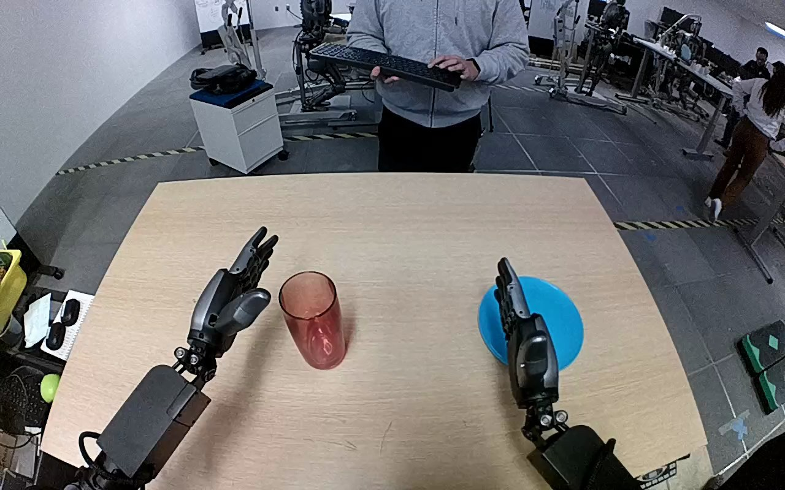

NVIDIA GR1 · 31
Video 31

Visual review action_review.json
{
"prompt_protocol": "humanoid_action_v1",
"prompt_provenance": "visually_authored_from_video_and_initial_frame",
"reviewed_contact_sheets": [
"sheet_001.jpg"
],
"inspected_frame_stride": 2,
"inspected_sampled_frame_count": 60,
"initial_scene": "In a forward-looking robot camera view, both forearms extend from the near side of the table. A tall translucent red glass stands upright near the center-left and a blue plate lies to its right. The left hand is open and raised; the right hand is open near the plate.",
"observed_sequence": [
{
"source_frame_interval": [
0,
17
],
"action": "Both hands initially hold position; the glass is upright on the table and the blue plate is empty.",
"confidence": "high"
},
{
"source_frame_interval": [
18,
47
],
"action": "The right arm moves inward from beside the plate toward the red glass with thumb and fingers spread; the left hand remains raised and does not touch the object.",
"confidence": "high"
},
{
"source_frame_interval": [
48,
71
],
"action": "The right fingers close around the sides of the red glass; the glass shifts slightly toward the hand as its grasp is secured.",
"confidence": "high"
},
{
"source_frame_interval": [
72,
89
],
"action": "The right hand lifts the glass and carries it rightward toward the blue plate, rotating it from upright toward horizontal.",
"confidence": "high"
},
{
"source_frame_interval": [
90,
113
],
"action": "The glass is brought across the blue plate and lowered while held sideways, with its open rim facing left and base near the right hand.",
"confidence": "high"
},
{
"source_frame_interval": [
114,
119
],
"action": "The right fingers spread, and the glass rolls or settles onto its side across the plate; the hand stays beside its base at the ending.",
"confidence": "high"
}
],
"arm_hand_roles": {
"right": "Only manipulating hand: approaches, closes fingers around the glass, lifts, transports, tips sideways, lowers across the plate and opens its fingers.",
"left": "Open hand remains raised away from the glass and plate; no stabilizing contact, transfer, or coordinated manipulation is visible.",
"coordination": "Single-hand manipulation; no hand-to-hand transfer or person interaction."
},
"anatomical_side_evidence": {
"evidence": "The forward-looking robot view shows paired proximal forearms entering from the lower near side. The active forearm extends from the robot camera's lower-right side and its inward-facing thumb/palm arrangement matches the robot-relative right hand; the opposite forearm and mirrored hand are on the left. This is a robot-facing-forward view, not a frontal view of a robot across the table.",
"confidence": "high",
"limitation": "Shoulder and torso attachment lie outside the camera field; identification uses the visible paired forearm orientation and hand anatomy."
},
"uncertainties": [
"At the ending, the right hand remains close to the glass base. The fingers visibly open and the glass lies sideways on the plate, but complete clearance of every finger from the partly occluded base and subsequent stability after withdrawal are not shown."
],
"annotation_discrepancies": [],
"evidence_frame_indices": [
0,
44,
56,
70,
80,
98,
110,
114,
117,
118,
119
],
"selected_execution_status": "uncertain",
"execution_status_reason": "The glass reaches the blue plate and rests sideways as the fingers open, but the hand does not withdraw fully and complete detachment is partly occluded; the annotation does not specify an upright final orientation.",
"terminal_state": "The red glass lies on its side across the blue plate, with its open rim toward the left and base beside the right palm. The right thumb and fingers are opening around the base; the hand has not withdrawn. The left hand remains open away from the action.",
"video_id": "31",
"dataset": "NVIDIA_GR1_100",
"dedicated_review_agent": "review_gr1_31",
"review_source_video": "NVIDIA_GR1_100/31/original/original.mp4",
"source_frame_count": 120,
"source_fps": 20.0,
"native_detail_frames": [
44,
56,
70,
80,
98,
110,
114,
117,
118,
119
],
"world_model_prompt": "The robot grasps the tall red glass around its sides with its right hand and lifts it from the tabletop. It carries the glass to the blue plate while tipping it sideways, lowers it across the plate, and opens its fingers with the glass lying on its side. Keep the camera fixed; preserve robot geometry, physically valid joint motion, and normal gripper opening and closing.",
"original_task_instruction": "Use the right hand to pick up tall red glass from center of tan table to center of bright blue plate.",
"selected_segment": {
"start_frame": 0,
"end_frame_exclusive": 120,
"reason": "Complete original single-task reference; no cropping or trimming requested."
},
"source_video_sha256": "a18bbfd5884d198a29b7ac6196949244fd52099ec1ef10c5dceb587c93d80703",
"review_completed_at": "2026-10-13T17:56:03.692632+00:00"
}